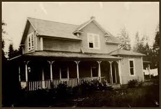
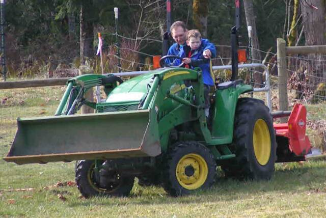
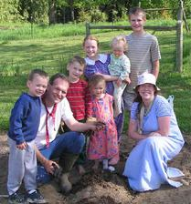
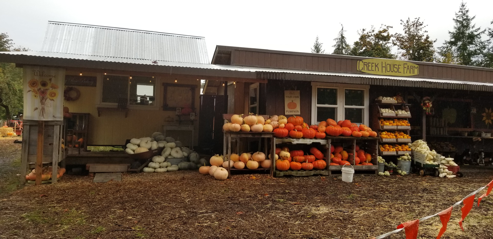
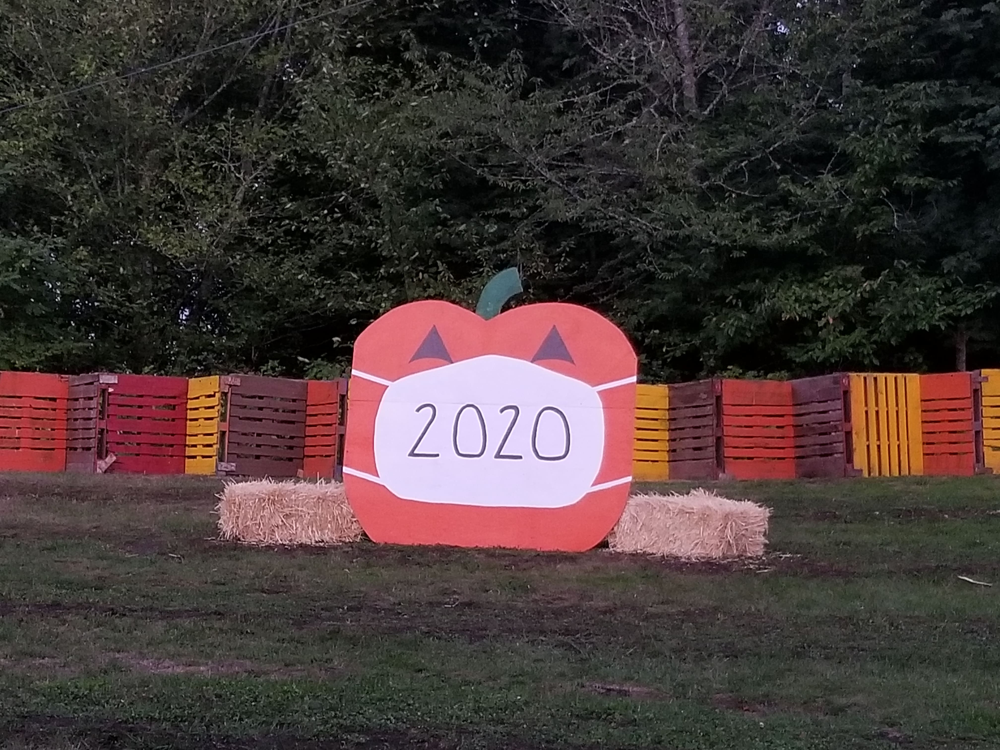
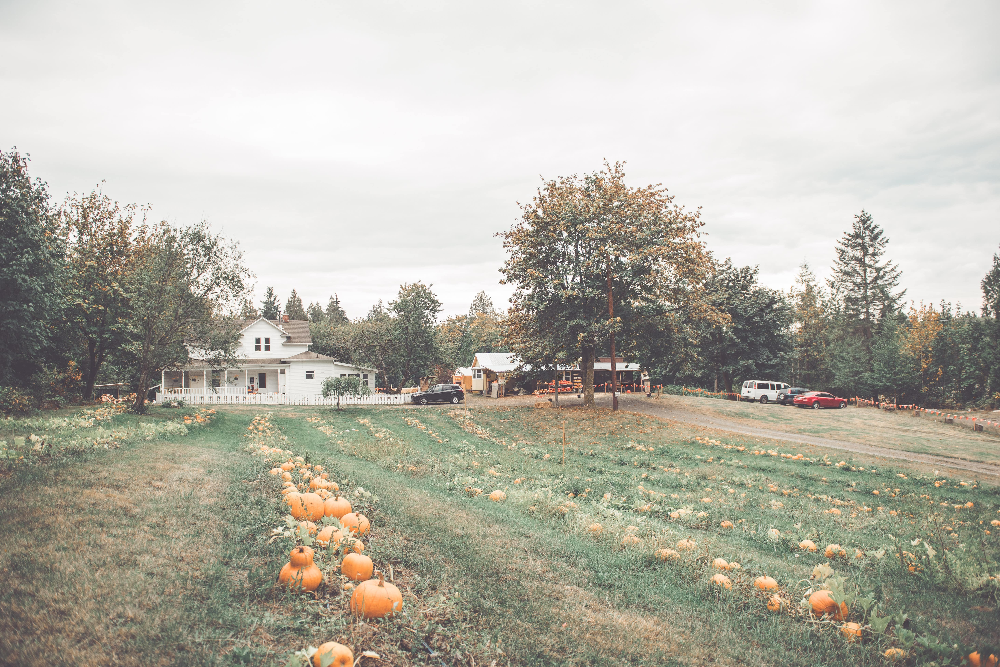

A Family Farm
Our farm serves many purposes, but first and foremost it is our home. Our children run on trails through the woods, splash in the creek, play with the animals and enjoy the
simple life of growing up on a farm. Here, our family has learned the truth of the phrase "work hard, play hard".
We are blessed by this lifestyle which is rapidly disappearing in our modern culture. Our family is pleased to invite you to our home and share our farm with you!
Our Farm's History

Farm House during the 1930s
The house was built in 1908 by the Fease family. It was sold in 1916 to the Collins family (Collins Road is named after this family), and was then sold again in 1940 to the Moore family.

Learning to Drive the Tractor
We purchased the house on 12 acres from the Moore estate in the summer of 2000. At the time of purchase, the surrounding forest came up to within 6 feet from the house.
For the next 9 years, we worked hard as a family, updating and restoring the farmhouse and
returning portions of the forest to organic farmland. All of this was done while carefully maintaining the beauty of the natural woodlands and creek.

Planting the First Pumpkin Seed
In 2007, we decided to
establish the pumpkin patch. We wanted to create a farm-based business that could be operated by us as a family. Over the spring and summer, we converted several of our pastures into
rows of pumpkins with mowed grass in between. The first October that the pumpkin patch was open was fairly simple.
The hay ride only seated about 12 passengers and the farmstand had a single checkout window.

Farmstand and Covered Area
Over the years, both our family and our farm have grown and changed. We have made several upgrades and additions to the pumpkin patch to enhance visitors'
experiences. These include expanding the farmstand, purchasing a larger tractor, and adding the slingshot, the barrel train, and the super slide, as well as planting more pumpkins.

Happy Pumpkin wearing Mask
In 2020, the COVID-19 pandemic forced us to consider whether or not we would be able to open to the public that year.
After careful consideration, we came up with a plan to restructure the way we operate the farm in October. Visits would be by appointment only, and there was a maximum for how many guests could be
on the property in each time frame. Wearing masks, encouraging social distancing, and sanitizing everything in advance for the protection of our 'guestomers' definitely made
this a season to remember. We were grateful that we could offer this opportunity in a very scary and uncertain year for many.

View of the Farm from Top of Hill
As we look ahead to this season and the seasons of the future, we hope to continue
providing guests with a quality experience here at Creek House Farm. The 2020 season, with smaller crowds on the farm, created an environment which was reminiscent of our early years - more relaxed, personable, and enjoyable for both guests and farm workers. This has encouraged us to continue the system of scheduled visits (by appointment only).
The pumpkin patch has provided bright memories over the years for our visitors. May it continue to bring smiles for many Octobers to come!